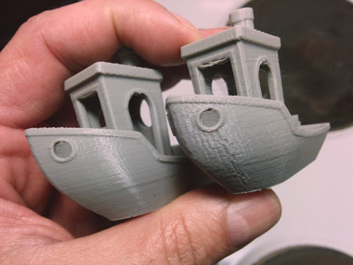
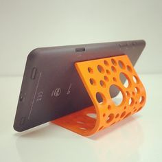
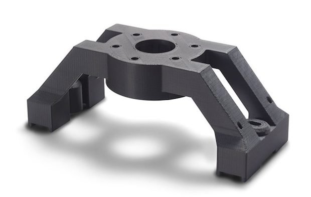
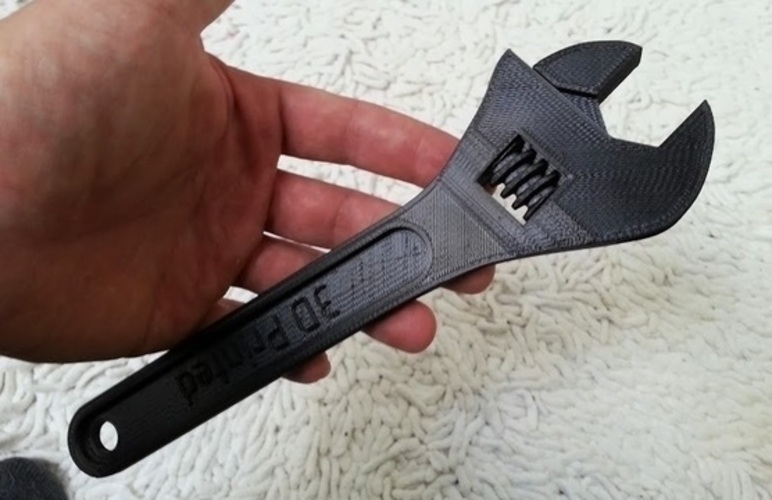

| Hajó benchmark, amin jól látható az eddigi fejlődés:  | Telefontartó ami nagyban megkönnyíti például a filmezést:  |
| Akár magát a nyomtatót is tudjuk fejleszteni nyomtatott alkatrészekkel például egy távtartóval:  | Az eddigi legkomplexebb munkám egy franciakulcs ami működőképes:  |